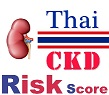

|  |
The Risk Estimator is intended as a companion tool to estimate 10-year risk for kidney disease based on EGAT study, pooled 20-year Cohort study. This Estimator could be use without blood testing or use with blood testing. However this risk estimator should be apply only in 38-71 year-old Thai population without previous kidney disease. Please contact your personal care provider if you have question. |
- Research Team
-

Faculty of Medicine Ramathibodi Hospital
Prof. Piyamitr Sritara, MD
Assoc. Prof. Chagriya Kitiyakara, MD
Assoc. Prof. Somlak Vanavanan, MD
Assist. Prof. Anchalee Chittamma, MD
Prin Vathesatogkit, MD
Montawatt Amnueypol, MD
Suwanit Triamchanchuchai, MD
Miss Patchara Paenpanuan
Miss Nisakorn Thomgmung
Miss Krittika Saranburut
-

Office of the Higher Education Commission
-

The Thailand Research Fund (TRF)
-

Health Systems Research Institute (HSRI)
-

Electricity Generating Authority of Thailand (EGAT)
Anintitaa Tasneeyapant, MD
-

The Heart Association of Thailand
-

National Research Council of Thailand
-

Thai Health Promotion Foundation